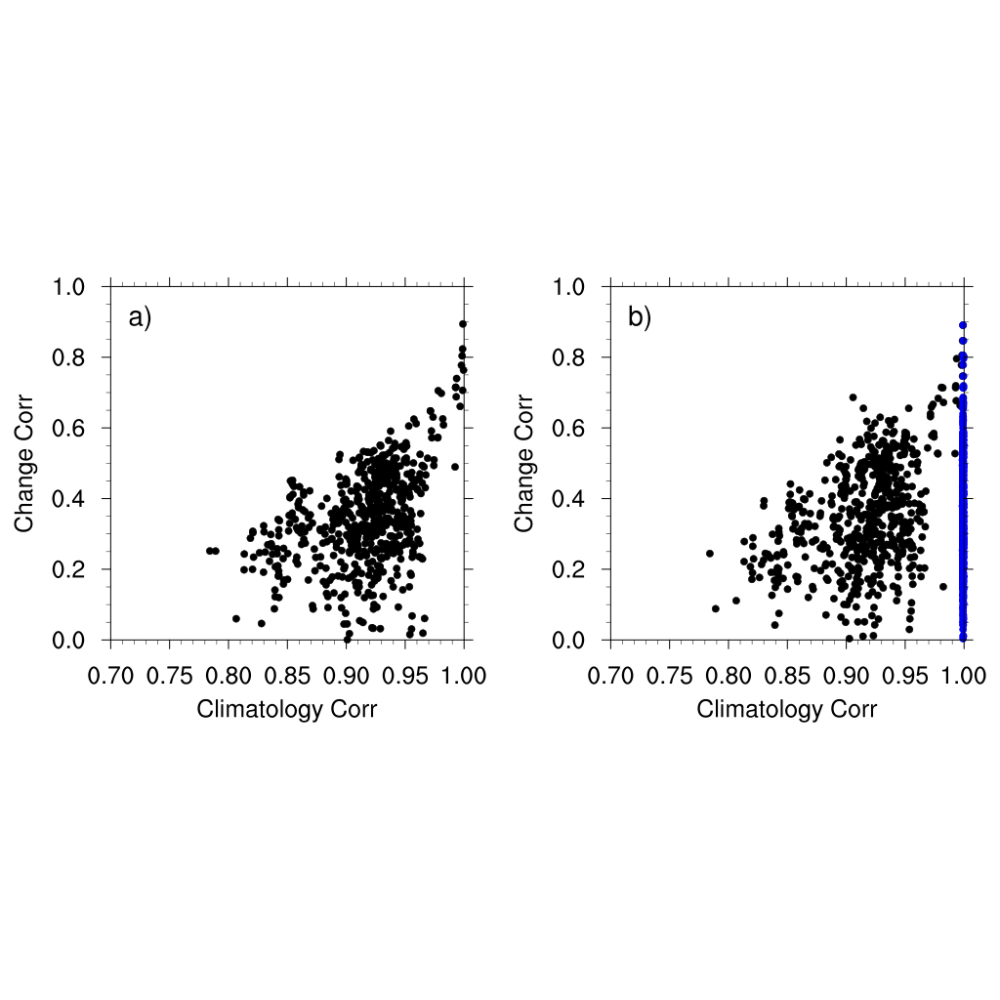

Uncertainty in Model Projections of Precipitation Change
Overview: There are large uncertainties in model simulations of the current climate and projections of future climate. Bias correction methods are often used to reduce intermodel spread based on observations. Regarding precipitation over land, we find that only model simulations of the current climate are improved while uncertainties in future projections remain large even after bias correction.

Cross-model spatial correlation of climatology vs. precipitation change.

Uncertainty in model projections.